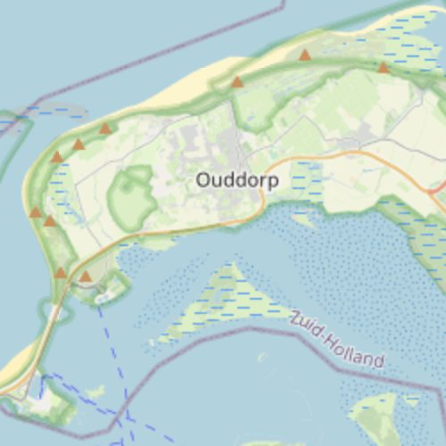

Turn frequent worldwide imagery into continuous surveillance of the strip you care about — flagging encroachment, digging and change along the corridor centreline, priced per kilometre.
Linear infrastructure stretches for thousands of kilometres through terrain no crew can walk often enough; risks accumulate quietly — vegetation encroachment, third-party digging, illegal tapping, erosion, unauthorised construction inside the easement. Corridor Watching differences enhanced 1 m visual and 2 m multispectral along the corridor centreline, flagging where the scene has changed against its own recent baseline. Because coverage is systematic rather than tasked, an entire national network can be monitored on one schedule and priced per kilometre — from a single right-of-way to 10,000 km. It pairs naturally with leak detection, firebreak-condition monitoring and BaseDEM grade/erosion analysis.

Tell us the ground you need to watch — we'll show you what SkySpera can do with it.
Talk to us